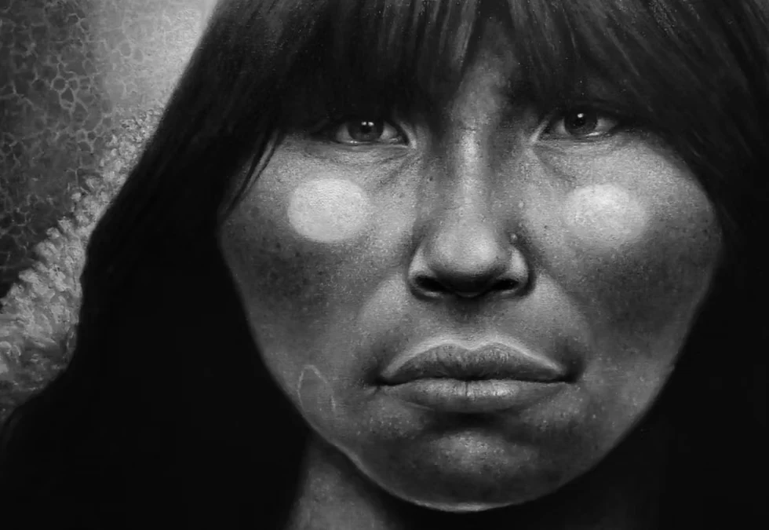
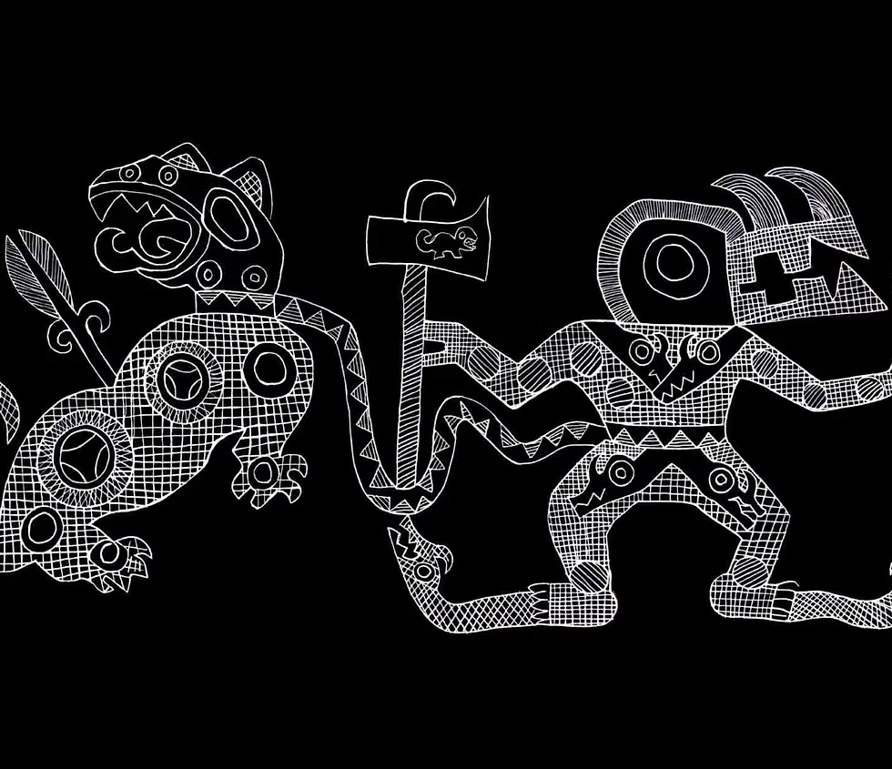

Arte · Ciencia · Territorio
GustavoEncina
Artista científico, creativo y productor de contenidos. Construyo imágenes y experiencias para que el conocimiento también pueda sentirse.
Argentina
hasta el presente

Mirar tambiénes investigar.
VIVO
01 / La mirada
Del archivo a la experiencia
Un pie en el pasado.
Otro en lo que todavía no existe.
La creatividad es el lenguaje que utiliza el inconsciente colectivo. Desde ahí trabajo entre la investigación, la memoria y la imaginación para volver cercano lo que parecía lejano.
Creo obras, museos, contenidos y mundos visuales que conectan a las personas con la naturaleza, la ciencia y las historias que todavía esperan ser contadas.
¿Tenés una idea? ↗02 / El oficio
Ideas que se
vuelven materia.
Una práctica híbrida para proyectos que necesitan sensibilidad, rigor y una imagen imposible de olvidar.
03 / El archivo
Obras que
abren preguntas.
16 piezas entre paleoarte, ilustración, producción, cómic y bellas artes. Tocá una obra para verla en detalle.
Un artista comprometido en exhibir la amenazante intervención humana en la naturaleza. En buscar y rescatar del anonimato a las especies extintas...
Dr. Adrián GiacchinoFundación Azara · Fundación Científica Felipe Fiorellino · Universidad Maimónides
04 / Trabajos realizados
Una trayectoria
en movimiento.
15 proyectos y colaboraciones entre instituciones, museos, editoriales y territorios que acercan la ciencia a nuevas audiencias.
El trabajo que conecta todas las piezas
Tecnópolis y las muestras de ciencia
Dirección artística, coordinación y producción para llevar ciencia, tecnología y curiosidad a Buenos Aires y a distintas provincias argentinas.

hacer visible?Gustavo Encina · Arte & Creatividad
05 / El próximo proyecto
Hagamos algo
que deje huella.
Si estás armando una muestra, un libro, una campaña o una experiencia que necesite una mirada distinta, contame qué tenés en mente.